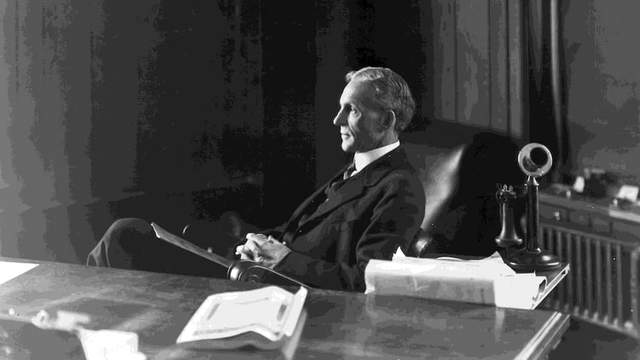
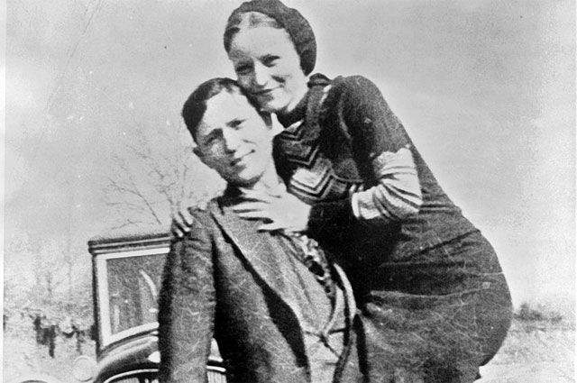
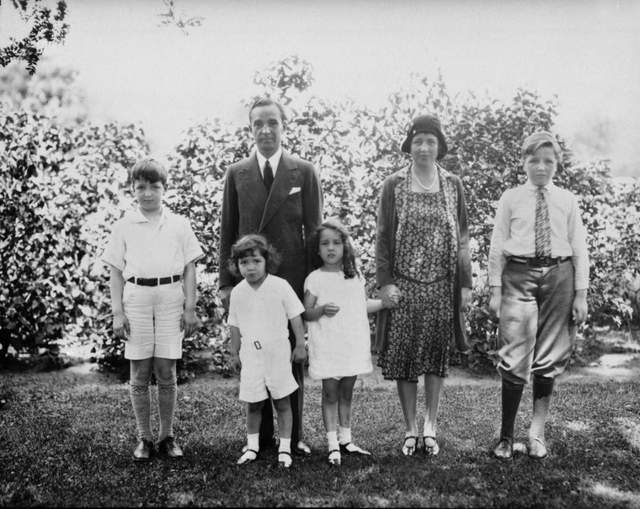

30 липня , день народження винахідника Генрі Форда. Цікаві факти про Форда допоможуть подивитися на цю людину абсолютно з іншого боку. Щоб домогтися визнання і стати одним з найуспішніших підприємців свого часу, йому довелося пройти через багато випробувань.
Уже в 16-річному віці Генрі Форд вперше став працювати на себе: він відремонтував несправну сусідську молотарку, і підрядився за три долари обробляти з її допомогою поля сусідів.
Протягом життя Генрі Форд запатентував понад 160 винаходів. Приділяти увагу патентам він став після того, як конкуренти його випередили, оформивши власний патент на його творіння, а потім подали на нього ж в суд, звинувативши в плагіаті. Це навчило його, що бюрократія в бізнесі має величезне значення.
Сам Генрі Форд вірив в реінкарнацію, і вважав, що його успіхи у винаході технологічних новинок обумовлені досвідом його минулих життів.
Підприємець користувався повагою і любов'ю своїх співробітників. Саме Генрі Форд першим ввів 8-годинний робочий день, в той час, як в інших компаніях він був не нормований. До того ж зарплати у нього були вищі, ніж у конкурентів: так він переманював до себе досвідчених працівників.
У Генрі Форда не було вищої освіти, через що він піддавався нападкам з боку журналістів і звинуваченні в безграмотності. Він неодноразово подавав до суду на видання.
Генрі Форд все життя любив єдину жінку, свою дружину Клару, яка мала дивовижний талант вірити чоловікові і завжди бути на його боці. На схилі років Форд сказав, що вона – це його єдине щастя, яке ніколи його не полишало, навіть коли він закохався в 17-річну секретарку Євангеліну в 1909.
Серед інших винаходів Форда є і конвеєр. Це дозволило йому досягти величезної результативності праці, і сьогодні конвеєри застосовуються по всьому світу.
Знамениті Бонні і Клайд зробили Форду вельми незвичайну рекламу. Гангстер Клайд Барроу частенько викрадав Форди і, як стверджують різні джерела, одного разу навіть написав листа Генрі Форду з вдячністю за надійну машину. В кінцевому підсумку знаменита бандитська пара Бонні Паркер і Клайд Барроу все ж була застрелена поліцейськими. Були вони в цей момент у машині марки Форд .
Бонні і Клайд
Все життя Генрі Форд був дуже консервативною людиною. Він не пив, не курив, і вимагав від усіх своїх співробітників стежити за моральним обличчям, аж до заборони непристойних танців навіть у вільний від роботи час. Співробітники компанії навіть опитували сусідів працівників, складаючи на них досьє.
Все життя Генрі Форд був вегетаріанцем, а також людиною різко антивоєнних поглядів.
Сьогодні Імперією Форда керують 16 його спадкоємців. По всьому світу працюють 47 заводів-гігантів, де залучено понад двісті тисяч робітників. Щогодини капітал Форд Мотор збільшується на 300 000 доларів. І це гідний підсумок життя унікальної людини!
Автомобілі Генрі Форда
-
Ford Quadricycle
- Виробник: Ford Motor Company
- Роки виробництва: 1896 — 1901
-
Ford Model A (1903)
- Виробник: Ford Motor Company
- Роки виробництва: 1903 — 1904
-
Ford Model C
- Виробник: Ford Motor Company
- Роки виробництва: 1904 — 1905
-
Ford Model F
- Виробник: Ford Motor Company
- Роки виробництва: 1905 — 1906
-
Ford Model N
- Виробник: Ford Motor Company
- Роки виробництва: 1906 — 1908
- Ford Model T
- Виробник: Ford Motor Company
- Жерстяна Ліззі
- Роки виробництва: 1908—1927
-
Форд-А
- Роки виробництва: 1927 — 1931
- Дата смерти: 7 апреля (83 года)